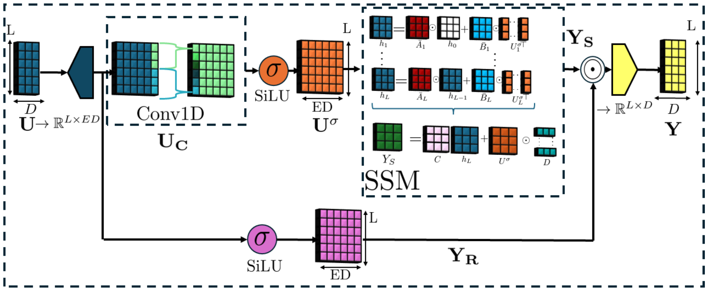
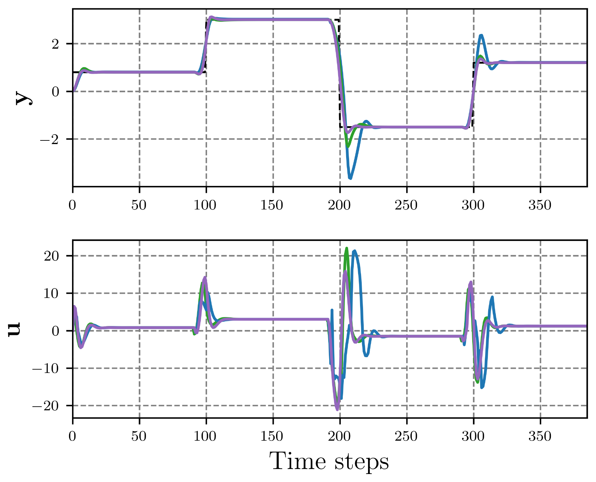
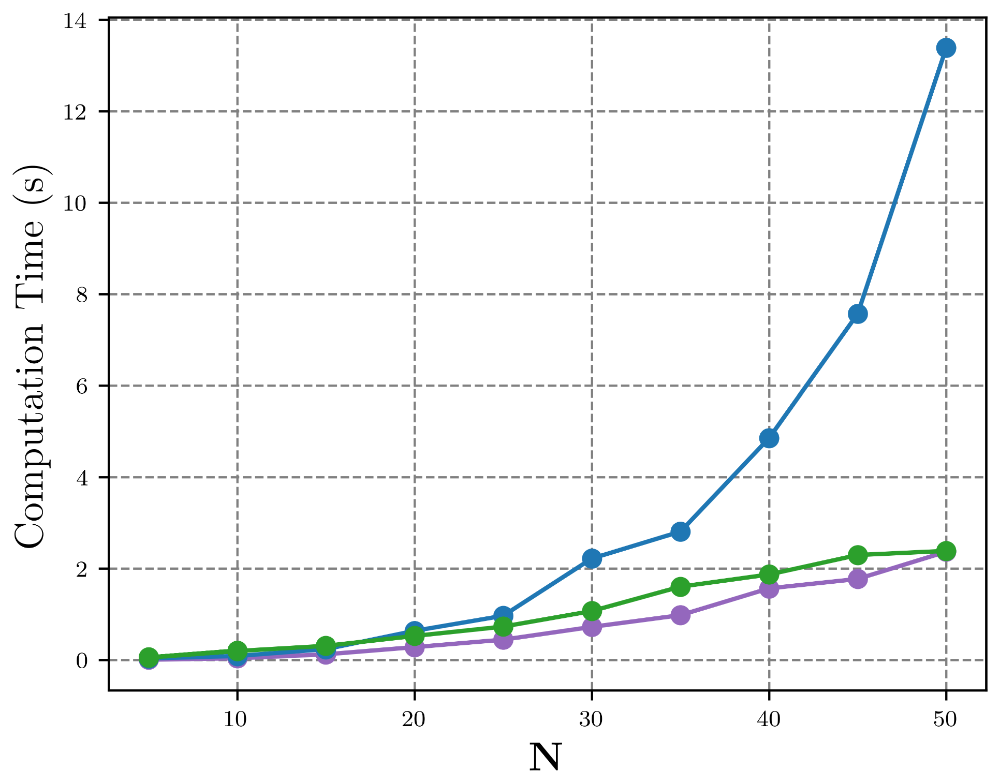
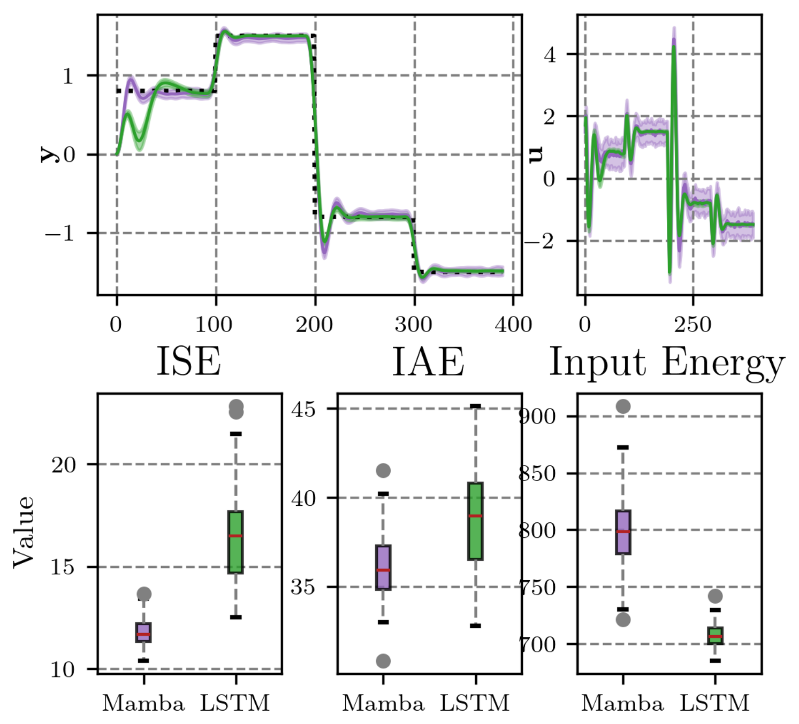
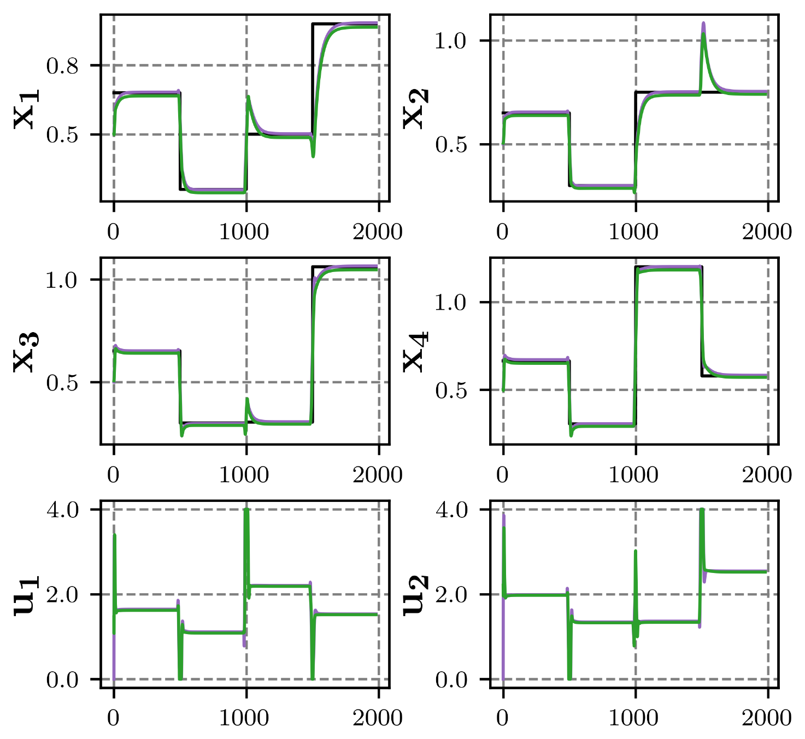

Video
Abstract
In this paper, we consider the design of Model Predictive Control (MPC) algorithms based on Mamba neural networks. Mamba is a neural network architecture capable of sub-quadratic computational scaling in sequence length with state-of-the-art modeling capabilities. We provide a consistent and complete mathematical description of the Mamba neural network. Then, adjustments and optimizations are made to construct a decoder-only Mamba multi-step predictor for MPC and an input-output formulation is given for sequence-to-sequence modeling of dynamical systems. The performance of Mamba-MPC is evaluated on several numerical examples and compared to a Long-Short-Term-Memory-Based MPC (LSTM-MPC) and a Transformer based MPC (Transformer-MPC) for computational scaling comparison. First, a Single-Input-Single-Output (SISO) Van der Pol oscillator is considered, where stability, reference tracking, and noise robustness are evaluated. Then, a MIMO Four Tank setup is introduced where Multiple-Input-Multiple-Output (MIMO) reference tracking is evaluated. Lastly, Mamba-MPC is implemented on a physical Quanser Aero2 setup for closed-loop reference tracking. The results demonstrate that Mamba-MPC is able to stabilize and track a reference for SISO and MIMO systems, both in simulation and on a physical setup. Moreover, Mamba-MPC consistently outperforms LSTM-MPC in predictive control and is significantly computationally faster.
Index terms Model predictive control, Neural networks, Recurrent neural networks, Machine learning, Data-driven modeling
Mamba as a multi-step predictor for MPC
The Mamba block used as the MPC prediction model, as described in the paper.

Results
Closed-loop results for the SISO Van der Pol oscillator and the MIMO Four Tank system. Throughout: Mamba-MPC , LSTM-MPC , Transformer-MPC , reference .




Citation
M. Cevaal, T. O. de Jong and M. Lazar, “Mamba Sequence Modeling meets Model Predictive Control,” IEEE Open Journal of Control Systems, 2026, pp. 1–15, doi: 10.1109/OJCSYS.2026.3724785. Available on IEEE Xplore.
@article{cevaal2026mamba,
title = {Mamba Sequence Modeling Meets Model Predictive Control},
author = {Cevaal, Michiel and de Jong, Thomas O. and Lazar, Mircea},
journal = {IEEE Open Journal of Control Systems},
year = {2026},
pages = {1--15},
doi = {10.1109/OJCSYS.2026.3724785},
issn = {2694-085X}
}
Acknowledgements
This work is licensed under a Creative Commons Attribution 4.0 License.
A collaboration between Tilburg University and the
Eindhoven University of Technology.
The implementation code in Python using PyTorch and CasADi is available on GitHub.
Correspondence: m.cevaal@tilburguniversity.edu.